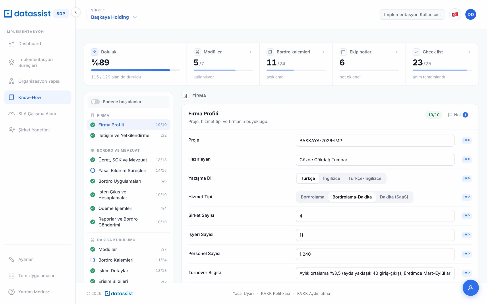
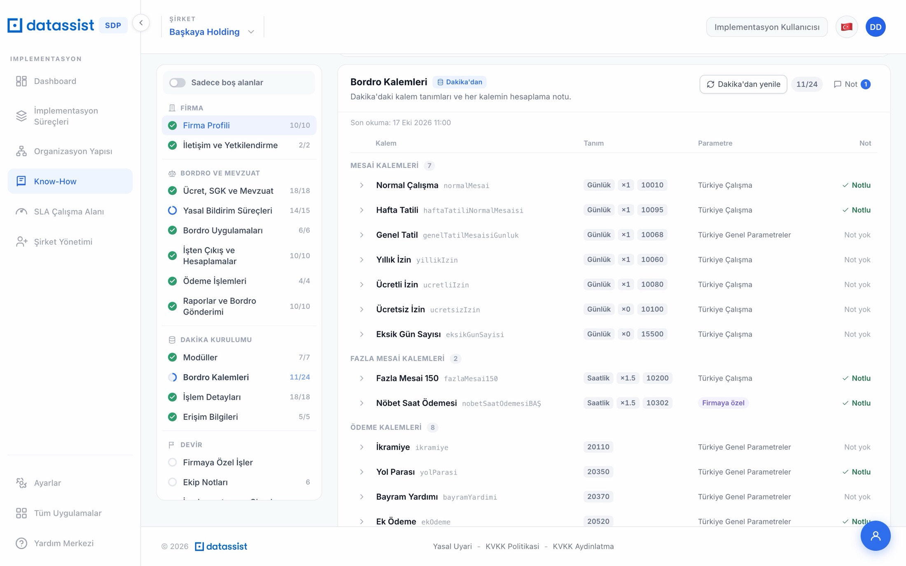
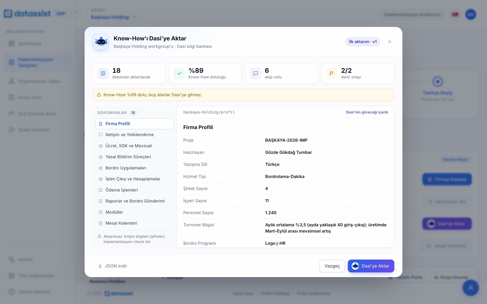
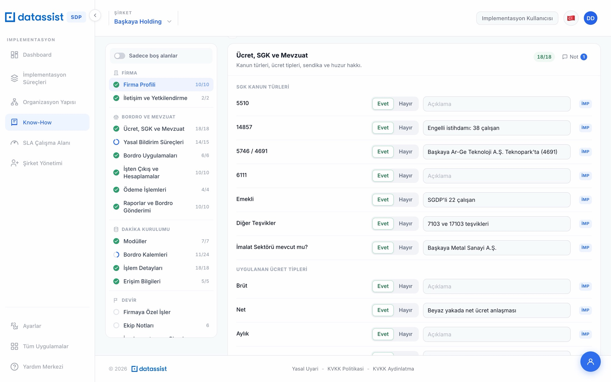
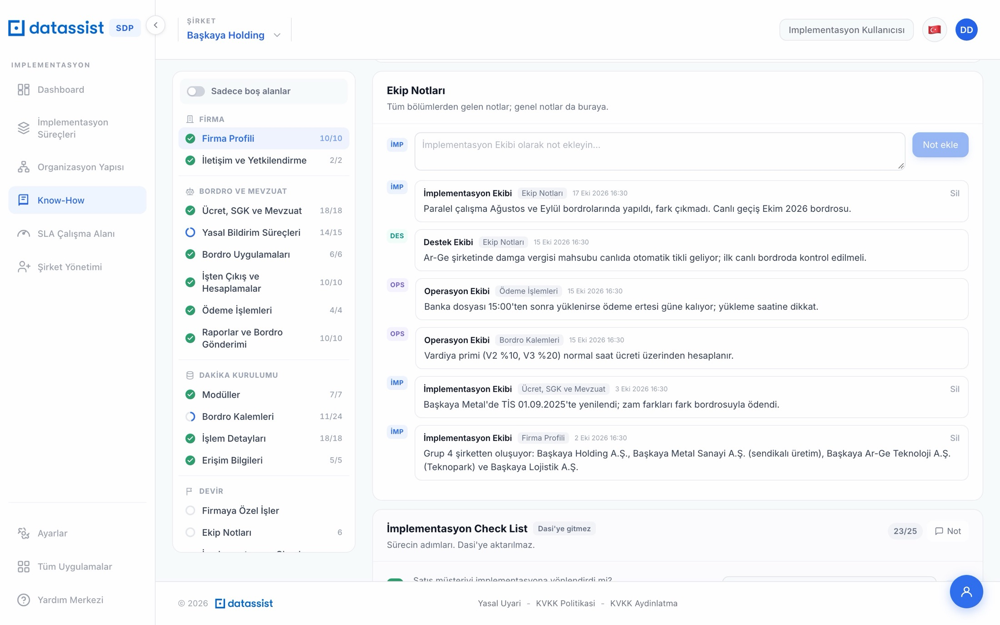

Implementasyon ekibinin müşteriyle ilk toplantıdan canlıya geçişe kadar topladığı teknik dokümantasyonun kapsamı, veri yapısı, kaynakları ve Atlas'a aktarım kuralları.
16bölüm, 4 ana grup altında
92tanımlı form alanı
32bordro kalemi kataloğu
18doküman / örnek workgroup paketi
İÇİNDEKİLER
Yönetici özeti
Know-How nedir, kim doldurur?
Bilgi mimarisi: 16 bölüm
Veri modeli ve kaynaklar
Alan sözlüğü
Liste bazlı bölümler
Bordro kalemleri
Aktarım paketi formatı
Örnek workgroup: Başkaya Holding
Atlas için öneriler ve açık konular
Hazırlayan: SDP Implementasyon Ürün Ekibi10 Kasım 2026
01
YÖNETİCİ ÖZETİ
Atlas'a ne aktarıyoruz?
Know-How, her müşteri grubu (workgroup) için bordro hizmetinin nasıl yürüyeceğini anlatan yaşayan teknik dokümandır. Eskiden ekip içinde dolaşan “Teknik Dokümantasyon.xls” dosyasının yerini alır ve SDP Implementasyon ekranında bölüm bölüm doldurulur.
Doküman; firmanın büyüklüğünü ve muhataplarını, uygulanan SGK kanunlarını ve teşvikleri, yasal bildirimleri, işten çıkış hesaplamalarını, Dakika kurulumunu, bordro kalemlerinin hesaplama notlarını, ödeme takvimini, raporları ve ekiplerin sahadan notlarını içerir. Canlıya geçişte workgroup bazında bir bilgi paketi olarak dışarı aktarılır. Bugün bu paket Dasi bilgi bankasına gidiyor; aynı paket Atlas'a da aktarılacak.
4ana grup: Firma, Bordro ve Mevzuat, Dakika Kurulumu, Devir
3ekip yazar: İmplementasyon, Operasyon, Destek
7Dakika modülü için kullanım bilgisi
0şifre: erişim bilgilerinin değeri hiç tutulmaz, aktarılmaz
Bu rapordan çıkması gerekenler
A
Kapsam
Know-How'da hangi bilginin bulunduğu: 16 bölüm, 92 form alanı, 7 liste tipi ve 32 kalemlik bordro kataloğu (Bölüm 3, 5, 6, 7).
B
Yapı
Her değerin kim tarafından, ne zaman girildiği ve hangi kaynaktan geldiği; teknik anahtarlar ve veri tipleri (Bölüm 4).
C
Paket formatı
Workgroup başına JSON zarf ve bölüm başına markdown doküman; doküman kimlikleri ve versiyonlama (Bölüm 8).
D
Sınırlar
Neyin aktarılmadığı: şifreler, check list ve devir onayı (Bölüm 3, 8). Atlas tarafı için öneriler ve açık konular (Bölüm 10).
Örnek veri hakkındaRaporda örnek olarak kullanılan Başkaya Holding workgroup'u demo verisidir; kişi adları, telefonlar ve vergi numarası kurgusaldır. Alan yapısı ve paket formatı üründeki kodla birebir aynıdır: tablolar doğrudan Know-How modülünün tanımlarından üretilmiştir.
02
KAPSAM VE SAHİPLİK
Know-How nedir, kim doldurur?
Know-How workgroup bazında tutulur: bir grubun altındaki tüm şirketler tek Know-How'ı paylaşır. Doldurma işi implementasyon sürecine yayılır; ilk toplantıda firma profiliyle başlar, kurulum ve paralel çalışma boyunca zenginleşir, operasyona devirle kapanır.
01İlk toplantı
Firma profili, muhataplar, hizmet tipi
02Analiz ve kurulum
Mevzuat, bildirimler, modüller, Dakika ayarları
03Paralel çalışma
Kalem notları, ödeme ve rapor detayları, ekip notları
04Devir onayı
İMP yöneticisi, Operasyon Grup Yöneticisi ve Müşteri Temsilcisi
05Aktarım
Workgroup paketi Dasi'ye bugün, Atlas'a hedefte
Yazan ekipler
Ekip
Kısa kod
Know-How'daki rolü
İmplementasyon Ekibi
imp · İMP
Dokümanın sahibi. Bölümlerin büyük kısmını doldurur, modül kullanımını işaretler, aktarımı başlatır. Aktarım düğmesi yalnız bu ekipte aktiftir.
Operasyon Ekibi
ops · OPS
Ödeme, puantaj ve kalem hesaplama detaylarını tamamlar; sahadan not ekler; devir onayında iki imzacıyı verir.
Destek Ekibi
destek · DES
Dakika tarafındaki tanımlar (calculator, kural setleri, firmaya özel kalemler) için not ve açıklama ekler.
Her değer imzalıdırKnow-How'daki her cevap, kişi, iş, modül işareti, kalem notu ve ekip notu; değeri giren ekibi (by) ve zamanı (at) birlikte saklar. Atlas bu sayede bir bilginin kimden geldiğini ve ne kadar güncel olduğunu gösterebilir.

Görsel 01 · Know-How ekranı: üstte doluluk, modül, kalem, not ve check list özetleri; solda dört grup altında bölümler ve bölüm bazında doluluk.
03
BİLGİ MİMARİSİ
16 bölüm, 4 grup
Bölümler ekranda dört grup altında sıralanır. Form tipindeki bölümler sabit alanlardan oluşur; diğerleri liste ya da durum tutar. Son sütun, bölümün dış sisteme (Dasi / Atlas) gidip gitmediğini gösterir.
Grup
Bölüm
Yapı
Boyut
Aktarım
Firma
Firma Profili
Proje, hizmet tipi ve firmanın büyüklüğü.
Form
10 alan
Aktarılır
İletişim ve Yetkilendirme
Müşteri tarafındaki muhataplar ve Dakika yetkileri.
Form + kişi listesi
1 alan + kişiler
Aktarılır
Bordro ve Mevzuat
Ücret, SGK ve Mevzuat
Kanun türleri, ücret tipleri, sendika ve huzur hakkı.
Form
18 alan
Aktarılır
Yasal Bildirim Süreçleri
Datassist'in yürüteceği bildirimler ve bordro kuralları.
Form
15 alan
Aktarılır
Bordro Uygulamaları
Kesinti süreçleri, çalışma bölünmesi ve puantaj.
Form
6 alan
Aktarılır
İşten Çıkış ve Hesaplamalar
Kıdem, ihbar, giydirilmiş ücret ve karşılık raporları.
Form
10 alan
Aktarılır
Ödeme İşlemleri
Banka dosyası ve ödeme takvimi.
Form
4 alan
Aktarılır
Raporlar ve Bordro Gönderimi
Standart ve firmaya özel raporlar, entegrasyon.
Form
10 alan
Aktarılır
Dakika Kurulumu
Modüller
Firmanın kullandığı Dakika modülleri. Yalnız implementasyon ekibi işaretler.
Evet / Hayır listesi
7 modül
Aktarılır
Bordro Kalemleri
Dakika'daki kalem tanımları ve her kalemin hesaplama notu.
Dakika kalem listesi + not
32 katalog kalemi
Aktarılır
İşlem Detayları
Kurulumda Dakika üzerinde yapılan ayarlar ve kontroller.
Form
18 alan
Aktarılır
Erişim Bilgileri
Şifreler bu ekranda tutulmaz; yalnız kasada kayıtlı olup olmadığı izlenir.
Durum listesi
5 kalem
Yalnız durum
Devir
Firmaya Özel İşler
Açılan işler ve yazılım geliştirmeleri.
İş listesi
Serbest liste
Aktarılır
Ekip Notları
Tüm bölümlerden gelen notlar; genel notlar da buraya.
Not akışı
Serbest akış
Aktarılır (bölümüne bağlı)
İmplementasyon Check List
Sürecin adımları. Dasi'ye aktarılmaz.
Adım listesi
25 adım
Aktarılmaz
Devir Onayı
İmplementasyon → Operasyon devir imzaları.
Onay
3 imza
Aktarılmaz
Ekip Notları nasıl gider?Notlar ekranda tek akışta görünür ama her not yazıldığı bölüme bağlıdır (sectionId). Aktarımda notlar ilgili bölümün dokümanının sonuna “Ekip notları” başlığıyla eklenir; hiçbir bölüme bağlı olmayan genel notlar ayrı bir “Ekip Notları” dokümanı olur.
04
VERİ MODELİ
Kayıt yapısı ve veri kaynakları
Bir workgroup'un Know-How'ı tek bir kayıttır. Form cevapları alan anahtarıyla, listeler dizi olarak tutulur. Aşağıdaki şema, ürünün sakladığı yapının özetidir.
Süreç tarifleri. Bazı alanlarda tek tıkla seçilen hazır standart metin vardır (ör. “Yasal kıdem tazminatı hesaplaması”).
Seçim
seçeneklerden biri
Sabit seçenek listesi; Bölüm 5'te her alanın seçenekleri yazılıdır.
Verinin geldiği yerler
1
Manuel giriş
Değerlerin çoğu ekipler tarafından ekrandan girilir. Elle girilen değer her zaman önceliklidir.
2
Organizasyon Yapısı
Şirket, işyeri ve personel sayısı elle girilmemişse Starter Kit ile kurulan organizasyon yapısından otomatik dolar.
3
Türetilmiş değer
Otomatik BES başlama tarihi, çalışan sayısına göre yasal geçiş takviminden hesaplanır (ör. 1000 ve üzeri çalışan → 01.01.2017).
4
Dakika
Bordro kalemlerinin tanımları (kod, birim, öncelik, katsayı, parametre, muaflık) Dakika'dan okunur; Know-How yalnız kalem başına açıklama ve hesaplama notu ekler.
Dakika kaynağı henüz örnek veriKalem tanımlarının Dakika'da hangi kaynaktan okunacağı netleşmedi; ekran şu an tutarlı örnek veriyle çalışıyor. Kaynak bağlandığında yalnız okuma katmanı değişecek; alan yapısı ve paket formatı aynı kalacak.
05
ALAN SÖZLÜĞÜ
Form bölümlerindeki 92 alan
Her alan için ekrandaki etiket, teknik anahtar, tip, varsa seçenekler/hazır metinler ve Başkaya Holding'deki örnek değer listelenmiştir. Teknik anahtarlar kararlıdır; Atlas tarafında alan bazlı eşleştirme yapılacaksa bu anahtarlar kullanılmalıdır.
Firma
Firma Profili
Proje, hizmet tipi ve firmanın büyüklüğü.
10 alan
Alan · teknik anahtar
Tip
Örnek değer (Başkaya Holding)
Projeproje
Kısa metin
BAŞKAYA-2026-IMP
Hazırlayanhazirlayan
Kısa metin
Gözde Gökdağ Tumbar
Yazışma Dilidil
Seçenekler: Türkçe · İngilizce · Türkçe-İngilizce
Seçim
Türkçe
Hizmet TipihizmetTipi
Seçenekler: Bordrolama · Bordrolama-Dakika · Dakika (SaaS)
Seçim
Bordrolama-Dakika
Şirket SayısısirketSayisi
Boşsa Organizasyon Yapısı'ndan gelir
Kısa metin
4
İşyeri SayısıisyeriSayisi
Boşsa Organizasyon Yapısı'ndan gelir
Kısa metin
11
Personel SayısıpersonelSayisi
Boşsa Organizasyon Yapısı'ndan gelir
Kısa metin
1.240
Turnover Bilgisiturnover
Kısa metin
Aylık ortalama %3,5 (ayda yaklaşık 40 giriş-çıkış); üretimde Mart–Eylül arası mevsimsel artış
Bordro ProgramıbordroProgrami
İpucu: Geçiş öncesi kullanılan program
Kısa metin
Logo j-HR
Bordro ProviderbordroProvider
Kısa metin
Şirket içi bordro ekibi (3 kişi)
Firma
İletişim ve Yetkilendirme
Müşteri tarafındaki muhataplar ve Dakika yetkileri.
1 alan
Alan · teknik anahtar
Tip
Örnek değer (Başkaya Holding)
Dakika YetkilendirmeleridakikaYetki
İpucu: Kime hangi yetki verildi?
Uzun metin
İK Direktörü: tüm şirketlerde onay ve rapor yetkisi Bordro ve Özlük Müdürü: puantaj girişi ve bordro onayı Finans Müdürü: maliyet ve muhasebe raporlarını görüntüleme
Bordro ve Mevzuat
Ücret, SGK ve Mevzuat
Kanun türleri, ücret tipleri, sendika ve huzur hakkı.
18 alan
Alan · teknik anahtar
Tip
Örnek değer (Başkaya Holding)
SGK Kanun Türleri
5510k5510
Evet / Hayır
Evet
14857k14857
Evet / Hayır
Evet
Not: Engelli istihdamı: 38 çalışan
5746 / 4691k5746
Evet / Hayır
Evet
Not: Başkaya Ar-Ge Teknoloji A.Ş. Teknopark'ta (4691)
6111k6111
Evet / Hayır
Evet
Emekliemekli
Evet / Hayır
Evet
Not: SGDP'li 22 çalışan
Diğer TeşviklerdigerTesvik
Evet / Hayır
Evet
Not: 7103 ve 17103 teşvikleri
İmalat Sektörü mevcut mu?imalat
Evet / Hayır
Evet
Not: Başkaya Metal Sanayi A.Ş.
Uygulanan Ücret Tipleri
BrütucretBrut
Evet / Hayır
Evet
NetucretNet
Evet / Hayır
Evet
Not: Beyaz yakada net ücret anlaşması
AylıkucretAylik
Evet / Hayır
Evet
SaatlikucretSaatlik
Evet / Hayır
Evet
Not: Üretimdeki mavi yaka
GünlükucretGunluk
Evet / Hayır
Hayır
Sendika
Sendikalı mı?sendikali
Evet / Hayır
Evet
Not: Başkaya Metal: Türk Metal Sendikası, MESS TİS (01.09.2025–31.08.2027)
Sendikalı ise çocuk ve/veya aile yardımı yapılır mı?cocukAile
Evet / Hayır
Evet
Not: Çocuk ve aile yardımı TİS'e göre aylık ödenir
Huzur Hakkı ve Stajyer
SGK'sız stajyer mevcut mu?stajyer
Evet / Hayır
Hayır
Huzur hakkı ödemesi mevcut mu?huzurHakki
Evet / Hayır
Evet
Huzur hakkı kimlere / hangi koşulda yapılıyor?huzurKosul
Uzun metin
Yönetim kurulu üyelerine (5 kişi) aylık sabit tutar; SGK'ya tabi değil, gelir ve damga vergisi kesilir.
Muhtasar Prim Hizmet Beyannamesi
Kim tarafından veriliyor?muhsgkVeren
Seçenekler: Şirket kendi şifresiyle · SMM/YMM şifresiyle · Bilinmiyor / Diğer
Seçim
SMM/YMM şifresiyle
Bordro ve Mevzuat
Yasal Bildirim Süreçleri
Datassist'in yürüteceği bildirimler ve bordro kuralları.
15 alan
Alan · teknik anahtar
Tip
Örnek değer (Başkaya Holding)
Otomatik BES süreciotoBes
Evet / Hayır
Evet
Otomatik BES başlama tarihiotoBesTarih
Türetilmiş değer (BES takvimi)
Kısa metin
Organizasyon Yapısı'ndaki çalışan sayısından hesaplanır
SGK şifreleri değiştirilsin mi?sgkSifreDegis
Evet / Hayır
Hayır
Not: Şifreler müşteride kalıyor; Datassist'e alt kullanıcı açıldı
Manuel hesaplanan, kural setiyle otomatikleştirilmesi istenen kalem var mı?manuelKalem
Evet / Hayır
Evet
Not: Vardiya primi Excel'de hesaplanıyordu; kural setine alındı (SDP-418)
Yemek kartı kullanımı var mı? (markete açık / kapalı)yemekKart
Evet / Hayır
Evet
Not: Multinet, markete kapalı
Eksik günde maaş ödeme günümaasGun
Seçenekler: Takvim günü · 30 gün üzerinden
Seçim
30 gün üzerinden
İzin parası önceden ödeniyor mu?izinParasiOnceden
Evet / Hayır
Hayır
Bildirimler
İşe Giriş BildirgesiiseGiris
Evet / Hayır
Evet
İşten Çıkış BildirgesiistenCikis
Evet / Hayır
Evet
İŞ-KUR Aylık İşgücü ÇizelgesiiskurCizelge
Evet / Hayır
Evet
Kimlik Bilgilendirme FormukimlikForm
Evet / Hayır
Evet
MUHSGK BildirimimuhsgkBildirim
Evet / Hayır
Evet
İş Göremezlik BildirimiisGoremezlik
Evet / Hayır
Evet
İşyeri Hekimi OnaylamaisyeriHekimi
Evet / Hayır
Hayır
Not: Müşteride kalıyor
Muhtasarmuhtasar
Evet / Hayır
Evet
Bordro ve Mevzuat
Bordro Uygulamaları
Kesinti süreçleri, çalışma bölünmesi ve puantaj.
6 alan
Alan · teknik anahtar
Tip
Örnek değer (Başkaya Holding)
Takip Edilen Kesinti Süreçleri
İcraicra
Uzun metin
Aktif 17 icra dosyası. Kesinti sırası: önce nafaka, sonra icra; 1/4 sınırı net ücret üzerinden.
Nafakanafaka
Uzun metin
4 nafaka dosyası; nafaka icradan önce kesilir.
Taksitli avanstaksitliAvans
Uzun metin
Avans en fazla 3 taksit; Dakika avans modülünden talep edilir, İK onayından sonra bordroya yansır.
Çalışma ve Puantaj
Çalışma hafta içi / hafta sonu / genel tatil olarak bölünüyor mu?calismaBolunme
Uzun metin
Evet. Üretimde hafta içi, hafta sonu ve genel tatil çalışmaları puantajda ayrı kalemlerle gelir.
Kullanılan yıllık izin / rapor gün sayısı bordroda gösteriliyor mu?izinGosterim
Uzun metin
Evet, kullanılan yıllık izin ve rapor günleri bordroda gösterilir.
Puantaj (boş puantaj gönderimi + gelen puantajda dikkat edilecekler)puantajDetay
Dakika'da Raporlar alanındaki "Boş Puantaj Raporu" çekilerek müşteriye iletilir. Gelen puantajda vardiya kodları (V1/V2/V3) kontrol edilir; gece vardiyası ayrıca işaretlenir.
Bordro ve Mevzuat
İşten Çıkış ve Hesaplamalar
Kıdem, ihbar, giydirilmiş ücret ve karşılık raporları.
10 alan
Alan · teknik anahtar
Tip
Örnek değer (Başkaya Holding)
Kıdem hesaplamalarıkidem
Hazır metin: “Yasal kıdem tazminatı hesaplaması”
Uzun metin
Yasal kıdem tazminatı hesaplaması. TİS kapsamındaki çalışanlarda ikramiye ve yol yardımı giydirilmiş ücrete dahil edilir.
İhbar hesaplamalarıihbar
Hazır metin: “Yasal ihbar tazminatı hesaplaması”
Uzun metin
Yasal ihbar tazminatı hesaplaması
Bordroda yer alıp giydirilmiş ücrete dahil olmayan ödemelergiydirilmisHaric
Hazır metin: “Bordroda yer alıp giydirilmiş ücrete dahil olmayan ödeme yoktur.”
Uzun metin
Fazla mesai ve satış primi giydirilmiş ücrete dahil edilmez.
Bordroda yer almayıp giydirilmiş ücrete dahil olan ödemelergiydirilmisDahil
Hazır metin: “Bordroda yer almayıp giydirilmiş ücrete dahil olan ödeme yoktur.”
Uzun metin
Yemek kartı (Multinet) ve özel sağlık sigortası işveren payı giydirilmiş ücrete dahil edilir.
Çıkışta kısmi (kıst) yapılan ödemelerkismiOdeme
Uzun metin
İkramiye ve bayram yardımı çalışılan gün oranında kıst ödenir.
Ay ortası çıkışı ödeme tarihiayOrtasi
Hazır metin: “Ay ortası işten çıkış yapan personelin maaşı ay sonunda ödenir.”
Uzun metin
Ay ortası işten çıkış yapan personelin maaşı ay sonunda ödenir.
İşten çıkış onayıcikisOnay
Hazır metin: “Standart çıkış süreci uygulanacaktır.”
Uzun metin
Çıkış talebi İK Direktörü onayından sonra Dakika'ya girilir; onaysız çıkış bildirgesi verilmez.
Çıkış işlemine dair ek detaylarcikisEk
Hazır metin: “Standart çıkış süreci uygulanacaktır.”
Uzun metin
İhbar süresine uyulmayan çıkışlarda ihbar tazminatı çalışandan kesilir; tutar İK ile teyit edilir.
Kıdem karşılığı raporu detaylarıkidemKarsilik
Hazır metin: “Talep edilen bir kıdem karşılık raporu yoktur.”
Uzun metin
Üç ayda bir (Mart, Haziran, Eylül, Aralık) şirket bazında kıdem karşılık raporu finansa iletilir.
İzin karşılığı raporu detaylarıizinKarsilik
Hazır metin: “Talep edilen bir izin karşılık raporu yoktur.”
Uzun metin
Talep edilen bir izin karşılık raporu yoktur.
Bordro ve Mevzuat
Ödeme İşlemleri
Banka dosyası ve ödeme takvimi.
4 alan
Alan · teknik anahtar
Tip
Örnek değer (Başkaya Holding)
Ödeme disketi ve detaylarıodemeDisketi
İpucu: Banka, yüklemeyi kim yapıyor?
Uzun metin
Garanti BBVA toplu ödeme dosyası (TXT). Dosyayı Datassist hazırlar, yüklemeyi Başkaya finans ekibi yapar.
Maaş ödeme tarihimaasTarih
Kısa metin
Her ayın son iş günü
Maaş dosyası yükleme tarihimaasYukleme
Kısa metin
Ödeme gününden 1 iş günü önce, saat 15:00'e kadar
Diğer ödemeler (avans vb.)digerOdemeler
Uzun metin
Avanslar ayın 15'inde; TİS ikramiyeleri Mart, Haziran, Eylül ve Aralık bordrosuyla ödenir.
Bordro ve Mevzuat
Raporlar ve Bordro Gönderimi
Standart ve firmaya özel raporlar, entegrasyon.
10 alan
Alan · teknik anahtar
Tip
Örnek değer (Başkaya Holding)
Maliyet raporumaliyetRaporu
Hazır metin: “Standart”
Uzun metin
Standart + masraf merkezi (şirket / işyeri / departman) kırılımı
Bordro icmalibordroIcmali
Hazır metin: “Standart”
Uzun metin
Standart
Muhasebe raporumuhasebeRaporu
Uzun metin
Logo Tiger muhasebe fişi formatında; her şirket için ayrı fiş
Firma için açılan işler ve yazılım geliştirmeleri.
kod, detay, aciklama
Ör. SDP-412 · Logo Tiger muhasebe fişi entegrasyonu · Canlıda; ilk ay paralel kontrol edilecek.
Modüller
Firmanın kullandığı Dakika modülleri. Yalnız implementasyon ekibi Evet / Hayır olarak işaretler; işaretlenmeyen modül “bilinmiyor” sayılır ve pakete girmez.
Modül
Kapsam
Başkaya
Bordrolama
Bordro hesaplama ve yasal bildirimler
Kullanıyor
İzin Modülü
İzin talep, onay ve bakiye takibi
Kullanıyor
Avans Modülü
Avans talepleri ve bordro kesintisi
Kullanıyor
Fazla Mesai
Fazla mesai girişleri ve onayı
Kullanıyor
Masraf
Masraf beyanı ve ödemeye aktarım
Kullanmıyor
Operasyon Teşvik
Datassist'in yürüttüğü teşvik takibi
Kullanıyor
Uzman Teşvik
Teşvik uzmanı analizi
Kullanmıyor
Erişim Bilgileri
Beş erişim kalemi için yalnız durum (Kasada kayıtlı · Eksik · Gerekmiyor) ve nerede tutulduğu bilgisi saklanır. Kullanıcı adı, şifre ve işyeri kodu bu ekrana yazılmaz.
Kalem
Kapsam
Başkaya
Dosya şifreleri
Bordro PDF ve dosya şifre kuralı
Kasada kayıtlı
SGK şifreleri
Kullanıcı adı, işyeri kodu, sistem ve işyeri şifresi
Kasada kayıtlı
İŞKUR şifreleri
İŞKUR portal erişimi
Kasada kayıtlı
1003B MUHSGK şifreleri
Muhtasar ve prim hizmet beyannamesi
Gerekmiyor (YMM veriyor)
OTOBES şifreleri
Otomatik BES sistemi
Kasada kayıtlı
Ekip Notları
Her bölümden eklenebilen serbest notlar.
sectionId, team, text, at
Ör. OPS: “Banka dosyası 15:00'ten sonra yüklenirse ödeme ertesi güne kalıyor.”
Devir Onayı
İmplementasyondan operasyona devrin üç imzası.
İmplementasyon Yöneticisi: şirkete atanmış sorumlu uzman; onay gerektirmez
Operasyon Grup Yöneticisi ve Müşteri Temsilcisi: listeden seçilir ve onaylar
İmplementasyon Check List (25 adım)
Sürecin iç takip listesidir; her adım tamamlanma tarihi ve ekibiyle tutulur. Dış sisteme aktarılmaz.
Satış müşteriyi implementasyona yönlendirdi mi?
Müşteriye implementasyon maili gönderildi mi?
Müşteri mail adresi açıldı mı?
Proje kodu açıldı mı?
Müşteri ile implementasyon toplantısı yapıldı mı?
Müşterinin modül talebi var mı?
Müşterinin rapor geliştirme veya entegrasyon talebi var mı?
Müşteri sendikalıysa fark bordrosu tanımlaması desteğe iletildi mi?
Bordro analizi yapıldı mı?
Masraf merkezi kategori kodu açıldı mı?
Paralel çalışıldı mı?
Müşteriye analiz maili gönderildi mi?
Müşteriden çalışma için onay alındı mı?
Muhasebe raporu kuruldu mu?
Live hazırlıkları maili gönderildi mi?
Canlıya kopyalama yapıldı mı?
Operasyon teşvik talebi varsa teşvik tanımlamaları yapıldı mı?
Müşteri operasyona devire hazır mı?
Müşteri operasyona devredildi mi?
Müşteri SaaS müşterisi ise eğitim planlandı mı?
07
BORDRO KALEMLERİ
Dakika tanımı + Know-How notu
Bordro kalemleri bölümü iki katmandan oluşur. Tanım katmanı Dakika'dan okunur ve Know-How'da değiştirilemez. Not katmanı ekiplerin her kalem için yazdığı açıklamadır; Atlas'a asıl değer katan kısım budur (“bu kalem bu firmada nasıl hesaplanıyor?”).
Kalem grubu
Not katmanında tutulanlar
Mesai Kalemleri
Açıklama · Hesaplama sırası
Fazla Mesai Kalemleri
Açıklama · Detay
Ödeme Kalemleri
Açıklama · Hesaplama sırası · Detay
Brütleştirme Amaçlı Ödemeler
Açıklama · Hesaplama sırası · Detay
Bordro Kesinti Kalemleri
Açıklama · Hesaplama sırası · Detay
Bordro Aylık Değerler
Açıklama
Firmaya özel kalemler (ör. Başkaya'daki Nöbet Saat Ödemesi) “Firmaya özel” olarak işaretlenir. Dakika'da henüz tanımlanmamış bir kalem Know-How'a taslak olarak eklenebilir; pakette “Dakika'ya henüz tanımlanmadı” ibaresiyle gider. Başkaya'da Dakika'dan 24 kalem okunuyor, 11'inin notu yazılmış.

Görsel 02 · Bordro Kalemleri: Dakika'dan gelen tanım (birim, katsayı, öncelik, parametre) ve kalem bazında not durumu.
Standart kalem kataloğu (32 kalem)
Dakika'da tanımlı standart kalemler. Öncelik hesaplama sırasını, katsayı ücret çarpanını, muaflık kodları SGK / gelir vergisi / damga vergisi istisnalarını gösterir.
Çalışanın Yaptırdığı Özel Sağlık S.ozelSaglikCalisan
Employee Private Health Ins.
—
—
—
Türkiye Genel Parametreler
—
Çalışanın Yaptırdığı Birikimli Hayat S.birikimliHayatCalisan
Employee Saving Life Ins.
—
—
—
Türkiye Genel Parametreler
—
08
AKTARIM PAKETİ
Workgroup başına tek paket
Aktarım, workgroup'un Know-How'ını tek bir JSON paketine dönüştürür. Paket bir zarf (kaynak, workgroup, versiyon, zaman, aktaran ekip, hariç tutulanlar) ve bölüm başına bir markdown doküman listesinden oluşur. Bugün Dasi'ye giden paket budur; ekrandan JSON olarak da indirilebilir.

Görsel 03 · Aktarım penceresi: doküman sayısı, doluluk, not ve onay özeti; dokümanların dış sistemde görüneceği hali ve aktarılmayanlar.
Doküman kimliği<workgroup-key>/<bölüm> biçimindedir; bordro kalemlerinde <workgroup-key>/kalemler/<grup>. Kimlikler aynı workgroup için her aktarımda aynıdır.
Boş alanlar gitmez. Hiç dolu alanı olmayan bölüm için doküman oluşmaz; bu yüzden doküman sayısı workgroup'a göre değişir.
Evet / Hayır alanları “Evet” / “Hayır” olarak, varsa notuyla birlikte yazılır: “Yemek kartı kullanımı var mı?: Evet — Multinet, markete kapalı”.
Organizasyon Yapısı'ndan gelen ve türetilen değerler, elle girilmiş gibi pakete girer.
Bordro kalemleri altı gruba bölünür; her kalem Dakika tanımı + Know-How notuyla tek blok olur.
Versiyon her aktarımda bir artar. Aktarımdan sonra Know-How değişirse ekran “Dasi'deki bilgi eski” uyarısı verir ve yeniden aktarım açılır.
Başkaya Holding paketi: 18 doküman
#
Doküman kimliği
Başlık
Karakter
1
baskaya-holding/profil
Firma Profili
613
2
baskaya-holding/iletisim
İletişim ve Yetkilendirme
557
3
baskaya-holding/mevzuat
Ücret. SGK ve Mevzuat
1.200
4
baskaya-holding/yasal
Yasal Bildirim Süreçleri
835
5
baskaya-holding/bordro
Bordro Uygulamaları
914
6
baskaya-holding/cikis
İşten Çıkış ve Hesaplamalar
1.180
7
baskaya-holding/odeme
Ödeme İşlemleri
547
8
baskaya-holding/raporlar
Raporlar ve Bordro Gönderimi
770
9
baskaya-holding/moduller
Modüller
196
10
baskaya-holding/kalemler/mesai
Mesai Kalemleri
991
11
baskaya-holding/kalemler/fazla
Fazla Mesai Kalemleri
421
12
baskaya-holding/kalemler/odeme
Ödeme Kalemleri
1.023
13
baskaya-holding/kalemler/brut
Brütleştirme Amaçlı Ödemeler
478
14
baskaya-holding/kalemler/kesinti
Bordro Kesinti Kalemleri
624
15
baskaya-holding/kalemler/aylik
Bordro Aylık Değerler
252
16
baskaya-holding/islem
İşlem Detayları
928
17
baskaya-holding/isler
Firmaya Özel İşler
281
18
baskaya-holding/notlar
Ekip Notları
305
Örnek doküman · baskaya-holding/profil
## Firma Profili
- Proje: BAŞKAYA-2026-IMP
- Hazırlayan: Gözde Gökdağ Tumbar
- Yazışma Dili: Türkçe
- Hizmet Tipi: Bordrolama-Dakika
- Şirket Sayısı: 4
- İşyeri Sayısı: 11
- Personel Sayısı: 1.240
- Turnover Bilgisi: Aylık ortalama %3,5 (ayda yaklaşık 40 giriş-çıkış); üretimde Mart–Eylül arası mevsimsel artış
- Bordro Programı: Logo j-HR
- Bordro Provider: Şirket içi bordro ekibi (3 kişi)
### Ekip notları
- [İmplementasyon Ekibi, 2 Eki 2026 16:30] Grup 4 şirketten oluşuyor: …
Örnek doküman · baskaya-holding/kalemler/mesai
## Mesai Kalemleri
### Normal Çalışma (normalMesai)
Tanım: Günlük, öncelik 10010, katsayı 1, Türkiye Çalışma
Açıklama: Aylık ücretlilerde 30 gün; saatlik ücretlilerde puantajdaki çalışılan gün.
Hesaplama sırası: 1
### Hafta Tatili (haftaTatiliNormalMesaisi)
Tanım: Günlük, öncelik 10095, katsayı 1, Türkiye Çalışma
Açıklama: Saatlik ücretlilerde 6 gün çalışana 1 gün hafta tatili ücreti.
…
09
ÖRNEK WORKGROUP
Başkaya Holding Know-How'ı
Canlıya Geçiş aşamasındaki demo workgroup. Atlas'a gelecek bir paketin ne kadar zengin olabileceğini gösterir.
%89doluluk (115 / 129 alan)
4 · 11şirket · işyeri, 1.240 çalışan
6ekip notu (İMP, OPS, DES)
23/25check list adımı tamam
Firma ve hizmet
Bordrolama-Dakika hizmeti; önceki program Logo j-HR
Grup: Holding, Metal Sanayi (sendikalı üretim), Ar-Ge Teknoloji (Teknopark), Lojistik
Turnover aylık ~%3,5; Mart–Eylül mevsimsel artış
Mevzuat
5510, 14857 (38 engelli), 5746/4691, 6111, emekli (22 SGDP), 7103/17103
Türk Metal · MESS TİS (01.09.2025–31.08.2027)
Huzur hakkı: 5 YK üyesi, SGK'sız, GV + damga
Bordro ve ödeme
17 icra, 4 nafaka; önce nafaka, 1/4 sınırı net üzerinden
Garanti BBVA toplu ödeme; maaş son iş günü, dosya bir gün önce 15:00'e kadar
Vardiya primi kural seti: V2 %10, V3 %20
Raporlar ve işler
Logo Tiger muhasebe fişi, şirket başına ayrı (SDP-412)
Üç ayda bir şirket bazında kıdem karşılık raporu (SDP-423)
e-bordro; YK bordroları şifreli PDF

Görsel 04 · Ücret, SGK ve Mevzuat bölümü: Evet / Hayır alanları, açıklama notları ve değeri giren ekip etiketi.

Görsel 05 · Ekip notları ve firmaya özel işler: her not ekip ve zaman bilgisiyle tutulur.
Paket workgroup.key (ör. baskaya-holding) ve sabit doküman kimlikleri taşır. Atlas her aktarımda dokümanları bu kimlikle güncellemeli (upsert), aynı içeriği çoğaltmamalıdır.
2
Versiyon farkında güncelleme
Boş bölümler pakete girmediği için, yeni versiyonda bulunmayan bir doküman Atlas'ta da kaldırılmalı ya da “güncel değil” işaretlenmelidir. Paket versiyonu ve aktarım zamanı Atlas'ta görünür tutulmalı.
3
İki katmanlı tüketim
Markdown dokümanlar okuma ve arama için hazırdır. Alan bazlı filtre ya da raporlama gerekiyorsa (ör. “sendikalı tüm müşteriler”), Bölüm 5'teki teknik anahtarlarla yapılandırılmış kayıt da pakete eklenebilir; ihtiyaç Atlas ekibinden netleşmeli.
4
Kaynak ve güncellik gösterimi
Her bilginin hangi ekipten ve ne zaman geldiği pakette mevcut (notlarda açıkça, alanlarda kayıtta). Atlas yanıtlarında bu bilgiyi göstermek güveni artırır.
Açık konular
A
Atlas giriş noktası ve kimlik doğrulama
Paketin Atlas'a hangi uç noktadan, hangi yetkiyle gönderileceği Atlas ekibiyle belirlenecek. SDP tarafında paket formatı hazır.
B
Dasi ve Atlas birlikte mi?
Aktarım bugün yalnız Dasi'ye yapılıyor. Atlas'ın Dasi'nin yerine mi geçeceği, yoksa aynı paketin iki hedefe mi gideceği netleşmeli.
C
Dakika kalem kaynağı
Bordro kalemi tanımları şu an örnek veriyle geliyor. Gerçek Dakika kaynağı bağlandığında katalog ve öncelik/katsayı değerleri firmaya göre değişecek.
D
Eski Excel dokümanları
Mevcut müşterilerin “Teknik Dokümantasyon.xls” dosyalarının Know-How'a içe aktarımı yapılmadı. Atlas'ta eski müşteri bilgisi isteniyorsa bu iş ayrıca planlanmalı (içlerindeki şifreler ayıklanarak).
E
Aktarım tetikleyicisi
Aktarım Canlıya Geçiş aşamasında implementasyon ekibi tarafından başlatılıyor. Canlı sonrası operasyonun güncellemeleri için otomatik ya da periyodik aktarım ihtiyacı değerlendirilmeli.